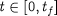
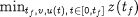
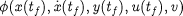
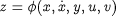
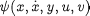
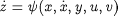
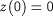
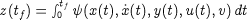

Open topic with navigation
The objective function
Dynamic optimisation in gPROMS seeks to determine
-
the time horizon, tf,
-
the values of the time invariant parameters, v, and
-
the time variation of the control variables, u(t), over the entire time horizon ,
so as to minimise (or maximise) the final value of a single variable z. This can
be written mathematically as:

Here the objective function variable, z is one of either the differential variables
x or the algebraic variables y. In the context of the batch reactor example,
tf would be the duration of the batch reaction while z would be the concentration of
component C (either a differential or an algebraic variable, depending on the model used).
The above form of the objective function is not as restrictive as might appear at first. In particular, it is worth noting that:
-
Maximisation can be carried out as well as minimisation.
-
If we wish to optimise a function  of several variables instead of a single variable, we can simply add an extra algebraic equation to the model:

The additional computational cost incurred because of this model extension is usually negligible.
-
If we wish to minimise or maximise the integral of a function  over the entire time horizon, we can simply add the differential equation:

together with the initial condition:

We can easily verify that this is equivalent to:

Again, very little additional computational cost is incurred in doing this.
-
Minimising the time horizon itself can be achieved by adding the equation:

together with the initial condition above.